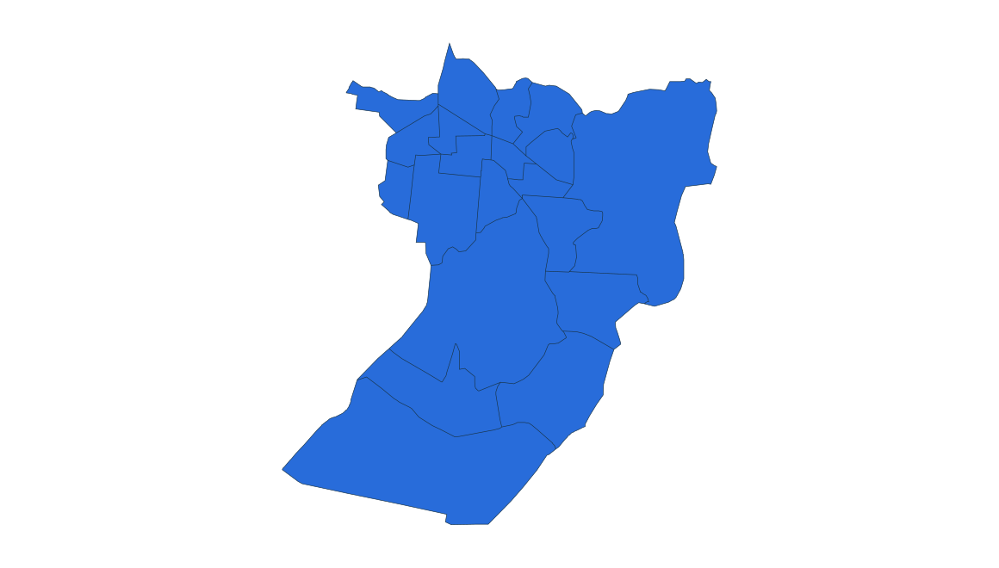
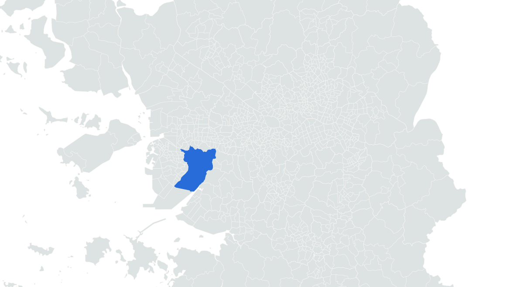

부동산 데이터 | 신혼부부가 사는 곳
16위 인천 남동구
2024.11.1 거주 기준 · 신혼부부 전체 · 단위: 쌍

소래습지생태공원 갈대밭·탐방데크
실제 장소 자료사진 · 촬영 2025
사진: Narubaru7 · CC BY 4.0


남동구 경계
2024 통계구역 · 수도권 내 위치
옆 순위와 함께 읽는 거주 규모
16위 인천 남동구
7,997쌍
17위 인천 연수구
7,875쌍
0
8,000
16,000쌍
연수구보다 122쌍 많음
앞뒤 순위 · 같은 0–16,000쌍 척도
14
???
???
15
???
???
16
남동구
7,997
17
연수구
7,875
18
기흥구
7,686
2023 → 2024
−598쌍
7.0% 감소
연수구 +1.0%
통계: 통계청 「2023·2024년 신혼부부통계」 수도권 구별 집계 | 지도: SGIS · vuski/admdongkor, CC BY 4.0 · 2024 경계